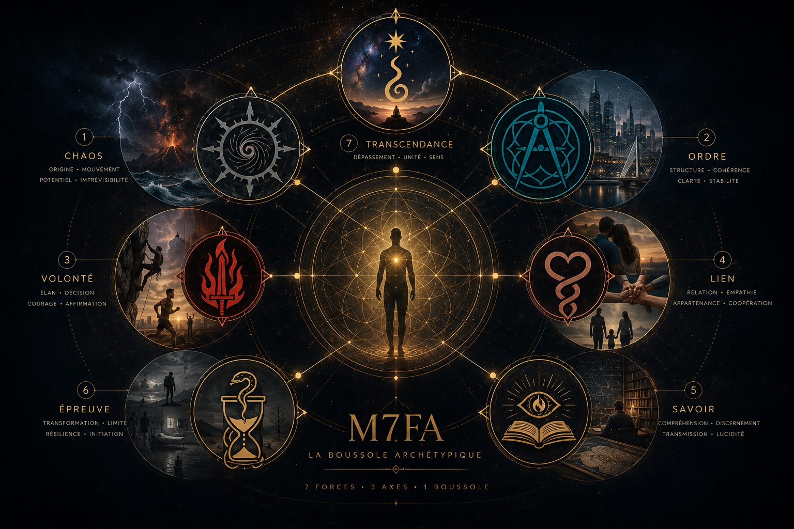

Modèle des 7 Forces Archétypiques
La Boussole Archétypique · 7 Forces · 3 Axes · 1 Boussole
Il arrive que le monde cesse d'être lisible.
Les repères se brouillent. Les récits se contredisent.
Les explications s'accumulent sans jamais vraiment éclairer.
Nous vivons dans un monde saturé de données, de discours, de modèles —
et pourtant, de plus en plus de personnes éprouvent un même sentiment :
quelque chose manque encore pour rendre le réel lisible.
Ce lieu ne propose ni réponses toutes faites, ni doctrine à adopter, ni vérité à croire.
Il propose une grille de lecture.

Le modèle
Le Modèle des 7 Forces Archétypiques est une boussole symbolique. Il ne cherche pas à dire ce qu'il faut penser, mais à rendre visibles les forces fondamentales qui structurent le réel : dans les sociétés, les civilisations, les récits, les crises, et jusque dans nos propres trajectoires intérieures.
Ces forces ne sont ni morales, ni idéologiques. Elles ne sont ni bonnes, ni mauvaises. Elles agissent, entrent en tension, s'équilibrent, se déforment. Le modèle ne dit pas qui a raison. Il montre ce qui domine, ce qui manque, ce qui compense, ce qui déborde.
Ce que vous trouverez ici
Le M7FA n'est pas un outil de pouvoir. Il est un outil de lucidité.
Clarté épistémique
Le modèle ne demande pas l'adhésion. Il supporte la critique. Il est conçu pour être mis à l'épreuve du réel.
Entrer ici, c'est accepter une chose simple mais exigeante : regarder le monde sans chercher à le réduire, et sans renoncer à le comprendre.
Si vous cherchez une vérité à défendre, ce site vous décevra.
Si vous cherchez un outil pour lire les dynamiques profondes à l'œuvre, alors vous êtes au bon endroit.
Le seuil est franchi. La lecture peut commencer.
Découvrir le modèle en une page →